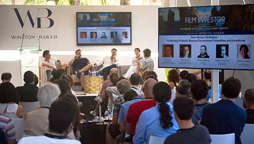

Industria


Mediante esta iniciativa, el Festival Internacional de Cine de Los Cabos busca facilitar el encuentro entre los profesionales de las cinematografías de México, Estados Unidos y Canadá con el resto del mundo. Desde aquí, promovemos el intercambio de ideas y desarrollamos alianzas estratégicas con el objetivo de que los proyectos cinematográficos trasciendan y se conviertan en obras propositivas que inviten a la reflexión y nos asombren con sus resultados.


